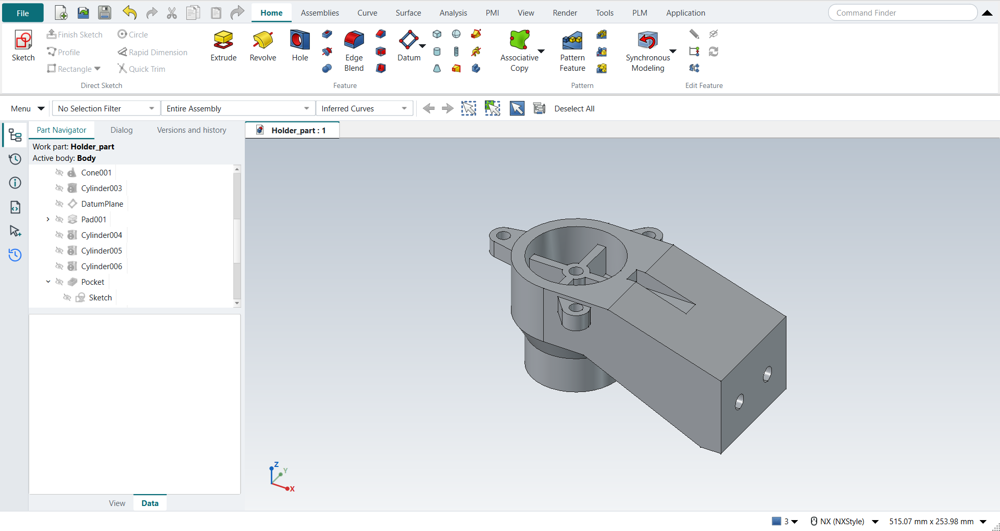

Tutorial AW: Holder
| Source |
Ming C. Leu, Wenjin Tao, Amir Ghazanfari and Krishna Kolan, NX 12 for Engineering Design (Missouri University of Science and Technology), exercise 4.10.2 (Holder). It continues the sketch of tutorial AK. |
| You learn |
Extrude with Symmetric Value, Block, Cylinder and Cone with Unite and Subtract, a Datum Plane at an offset, a sketch on it, Extrude (Subtract) of some of a sketch’s curves, Show and Hide |
| Sizes |
the drawing’s, in inches, typed in millimetres. |
The book gives only the detail drawing and says to continue from the sketch. The steps are ours, and so is the reading of the views where the drawing leaves room:
-
The hub is Ø3.50 down to 1.75, then a cone to Ø2.76 at 2.41, then Ø2.76 down to 3.50. The drawing’s 30° and 0.37 make the cone 0.64 high; its 2.41 makes it 0.66 high (29.3°). The 2.41 is used.
-
Inside, from below: a Ø2.00 bore, a cone to Ø2.76, and Ø2.76 up to 1.50 below the top. The cup is Ø2.76 and 1.38 deep, so a 0.12 web separates the two.
-
The boss and the cross rise from the cup’s floor to 0.50 below the top. The ribs run 3.00 long into the wall.
-
The arm is hollow from below, with walls 0.50 at the sides and 0.63 at the end. The slot is 0.50 deep.
-
The tapped holes are drilled at their tap-drill sizes, 25/64 for the 7/16-20 and 29/64 for the 1/2-20, and the threads are not modelled. The 1/16 rounds and detail B are left out.
The replay runs tutorial AK first and starts from the sketch AK saved.
Step by step
1. The arm
Open Holder and save it as Holder_part.
Click Sketch, pick the XC-ZC plane and draw the arm’s side with Line (L):
-
along the top from the axis to 2.00;
-
17.8° down to the end, at 5.50 and 1.125 below the top;
-
down the end to 3.50;
-
back 0.63 along the bottom;
-
25.7° up to 1.75 below the top;
-
back to the axis, and up to the start.
Start each line on the last one’s end, so that the sketcher makes the two coincident, and type its other end. Then Ctrl+Q.
Click Extrude, pick a line, choose Symmetric Value and type 88.9 mm (3.50 in), then click OK. Choose Block: origin (0, −1.25, −3.50), 4.87 × 2.50 × 2.00, Boolean Subtract. This leaves the arm hollow from below.
2. The hub
With Cylinder (Axis, Diameter, and Height, vector ZC), make Ø3.50 × 1.75 at (0, 0, −1.75) with Unite. With Cone (Diameters and Height), make Ø2.76 to Ø3.50 × 0.66 at (0, 0, −2.41) with Unite. Add a Cylinder Ø2.76 × 1.09 at (0, 0, −3.50) with Unite.
Hollow it from below with Subtract:
-
a Cylinder Ø2.00 × 1.09 at (0, 0, −3.50);
-
a Cone from Ø2.00 to Ø2.76, 0.66 high, at (0, 0, −2.41);
-
a Cylinder Ø2.76 × 0.25 at (0, 0, −1.75).
3. The lugs
Select the XC-YC plane and choose Datum > Datum Plane. Type −3.048 mm (0.12 in) along Z and press MB2. Click Sketch on the datum plane. Draw each lug’s straight part with Line: from the Ø3.50 circle, 1.00 wide, out to where its sides touch the R0.38 end. The ends are AK’s. Click Extrude, pick a line, choose Unite, type 12.7 mm (0.50 in) and tick Reversed. Make the round ends with three Cylinder features, each Ø0.76 × 0.50 on the bolt circle at (·, ·, −0.62), with Unite.
4. The cup, from the sketch’s circles
Select AK’s sketch and press Ctrl+Shift+K (Show): FreeCAD may have hidden it. Click Extrude (Subtract), set the Curve Rule to Single Curve and pick the Ø2.76 circle and the lugs' three Ø0.38 circles. Type 35.052 mm (1.38 in) and click OK. This cuts the cup and the lug holes.
Add the boss, a Cylinder Ø0.75 × 0.88 at (0, 0, −1.38), with Unite. Then make the cross from two Block features with Unite, each 3.00 × 0.25 × 0.88: one along XC and one along YC.
5. The slot and the holes
Choose Block with Subtract: from the Ø3.50 circle (x = 1.732) to past the end, 0.50 wide and 0.50 deep. This is the sketch’s slot. Make the holes with Cylinder and Subtract:
-
Ø25/64 through the boss and the web;
-
two Ø29/64 along XC through the end, 1.09 up and 1.50 apart.
Select the datum plane and the sketch and press Ctrl+B (Hide).

Save the part.
The replay
| # | In the book (NX) | In FreeCAD NX-Style | Result | Notes |
|---|---|---|---|---|
AW1 |
Open the holder’s sketch and save it as Holder_part |
File > Open (by script); file name given once by script (the system file dialog is not driven); a change, then the Ctrl+S key |
same |
tutorial AK’s sketch, 30 curves; Holder_part.FCStd rewritten by Ctrl+S: the file holds the change and the part is unmodified afterwards (modified before the key: True); FreeCAD format, not .prt |
AW2 |
Sketch the arm’s side: its top flat, then 17.8° down to the end, the end, and 25.7° back under it |
ribbon 'Home › Direct Sketch > Sketch' on 'XZ-plane (Base plane)'; L (Line) x7, 7 points typed, 7 clicked on the last line’s end (a coincident end); MB2 after each |
same |
the outline closed True; its ends within 8.9e-10 mm of the drawing’s (in) [(0, 0), (2.0, 0), (5.5, -1.125), (5.5, -3.5), (4.87, -3.5), (1.2338, -1.75), (0, -1.75)] |
AW3 |
Extrude the arm 3.50 wide, Symmetric Value |
ribbon 'Home › Feature > Extrude', a line picked (QuickPick; Curve Rule Inferred Curves), 'Symmetric', 'lengthEdit' = 88.9 mm, OK clicked |
same |
same solid as the reference: 0 mm³ differ, box within 1e-07 mm, 9 faces (9 in the reference) |
AW4 |
Block subtracted from below: the arm hollow, walls 0.50 at the sides and 0.63 at the end |
ribbon 'Home › Feature', Type 'Origin and Edge Lengths', XC/YC/ZC 0/-31.75/-88.9 typed, length 123.698, width 63.5, height 50.8 typed, Boolean 'Subtract', OK |
same |
same solid as the reference: 0 mm³ differ, box within 1e-07 mm, 15 faces (15 in the reference); origin (0.0, -31.75, -88.9); one undo step ['Block']; with Body |
AW5 |
Cylinder Ø3.50 x 1.75 under the sketch, Unite: the hub |
ribbon 'Home › Feature', Type 'Axis, Diameter, and Height', Specify Vector 'ZC', XC/YC/ZC 0/0/-44.45 typed, diameter 88.9, height 44.45 typed, Boolean 'Unite', OK |
same |
same solid as the reference: 0 mm³ differ, box within 1e-07 mm, 15 faces (22 in the reference); origin (0.0, 0.0, -44.45); one undo step ['Cylinder']; with Body |
AW6 |
Cone Ø2.76 to Ø3.50, 0.66 high, under the hub, Unite |
ribbon 'Home › Feature', Type 'Diameters and Height', Specify Vector 'ZC', XC/YC/ZC 0/0/-61.214 typed, Base 70.104, Top 88.9, Height 16.764 typed, Boolean 'Unite', OK |
same |
same solid as the reference: 0 mm³ differ, box within 1e-07 mm, 18 faces (21 in the reference); origin (0.0, 0.0, -61.214); one undo step ['Cone']; with Body |
AW7 |
Cylinder Ø2.76 down to 3.50, Unite: the foot |
ribbon 'Home › Feature', Type 'Axis, Diameter, and Height', Specify Vector 'ZC', XC/YC/ZC 0/0/-88.9 typed, diameter 70.104, height 27.686 typed, Boolean 'Unite', OK |
same |
same solid as the reference: 0 mm³ differ, box within 1e-07 mm, 19 faces (22 in the reference); origin (0.0, 0.0, -88.9); one undo step ['Cylinder']; with Body |
AW8 |
Cylinder Ø2.00 subtracted from below: the bore |
ribbon 'Home › Feature', Type 'Axis, Diameter, and Height', Specify Vector 'ZC', XC/YC/ZC 0/0/-88.9 typed, diameter 50.8, height 27.686 typed, Boolean 'Subtract', OK |
same |
same solid as the reference: 0 mm³ differ, box within 1e-07 mm, 21 faces (24 in the reference); origin (0.0, 0.0, -88.9); one undo step ['Cylinder']; with Body |
AW9 |
Cone Ø2.00 to Ø2.76 subtracted: the inside of the hub’s cone |
ribbon 'Home › Feature', Type 'Diameters and Height', Specify Vector 'ZC', XC/YC/ZC 0/0/-61.214 typed, Base 50.8, Top 70.104, Height 16.764 typed, Boolean 'Subtract', OK |
same |
same solid as the reference: 0 mm³ differ, box within 1e-07 mm, 22 faces (25 in the reference); origin (0.0, 0.0, -61.214); one undo step ['Cone']; with Body |
AW10 |
Cylinder Ø2.76 subtracted up to 1.50 below the top: under the web |
ribbon 'Home › Feature', Type 'Axis, Diameter, and Height', Specify Vector 'ZC', XC/YC/ZC 0/0/-44.45 typed, diameter 70.104, height 6.35 typed, Boolean 'Subtract', OK |
same |
same solid as the reference: 0 mm³ differ, box within 1e-07 mm, 23 faces (26 in the reference); origin (0.0, 0.0, -44.45); one undo step ['Cylinder']; with Body |
AW11 |
Datum Plane 0.12 below the XC-YC plane (the lugs' top) |
the XY plane selected (Part Navigator) + ribbon 'Home > Datum > Datum Plane', 'attachmentOffsetZ' = -3.048 mm, MB2 = OK |
same |
plane at z = -3.048 mm |
AW12 |
Sketch the lugs' straight parts: from the Ø3.50 circle out to where their sides touch the R0.38 ends, three times |
the datum plane + ribbon 'Home › Direct Sketch > Sketch'; L (Line) x12, 12 points typed, 12 clicked on an end; MB2 after each |
same |
three closed outlines [True, True, True], their ends within 7.1e-10 mm of tutorial AK’s: on the Ø3.50 circle 1.00 apart, and the tangent points of the R0.38 ends |
AW13 |
Extrude the lugs 0.50 down, Unite |
ribbon 'Home › Feature > Extrude', a side picked (QuickPick; Curve Rule Inferred Curves), dialog opened True; Boolean 'Unite', 'lengthEdit' = 12.7 mm, Reversed clicked (True); OK clicked |
same |
same solid as the reference: 0 mm³ differ, box within 1e-07 mm, 38 faces (41 in the reference) |
AW14 |
Cylinder Ø0.76 x 0.50, the lug’s R0.38 end at 180° on the bolt circle, Unite |
ribbon 'Home › Feature', Type 'Axis, Diameter, and Height', Specify Vector 'ZC', XC/YC/ZC -57.15/6.99886e-15/-15.748 typed, diameter 19.304, height 12.7 typed, Boolean 'Unite', OK |
same |
same solid as the reference: 0 mm³ differ, box within 1e-07 mm, 38 faces (41 in the reference); origin (-57.15, 0.0, -15.748); one undo step ['Cylinder']; with Body |
AW15 |
Cylinder Ø0.76 x 0.50, the lug’s R0.38 end at 300° on the bolt circle, Unite |
ribbon 'Home › Feature', Type 'Axis, Diameter, and Height', Specify Vector 'ZC', XC/YC/ZC 28.575/-49.4934/-15.748 typed, diameter 19.304, height 12.7 typed, Boolean 'Unite', OK |
same |
same solid as the reference: 0 mm³ differ, box within 1e-07 mm, 38 faces (41 in the reference); origin (28.575, -49.493352, -15.748); one undo step ['Cylinder']; with Body |
AW16 |
Cylinder Ø0.76 x 0.50, the lug’s R0.38 end at 60° on the bolt circle, Unite |
ribbon 'Home › Feature', Type 'Axis, Diameter, and Height', Specify Vector 'ZC', XC/YC/ZC 28.575/49.4934/-15.748 typed, diameter 19.304, height 12.7 typed, Boolean 'Unite', OK |
same |
same solid as the reference: 0 mm³ differ, box within 1e-07 mm, 38 faces (41 in the reference); origin (28.575, 49.493352, -15.748); one undo step ['Cylinder']; with Body |
AW17 |
Extrude (Subtract) the sketch’s Ø2.76 circle and the lugs' Ø0.38 circles 1.38 down: the cup and the lug holes |
the sketch shown (Ctrl+Shift+K: True); ribbon 'Home › Feature > Extrude (Subtract)', Curve Rule 'Single Curve', 4 circles picked (QuickPick), 'lengthEdit' = 35.052 mm, OK clicked |
same |
same solid as the reference: 0 mm³ differ, box within 1e-07 mm, 43 faces (46 in the reference) |
AW18 |
Cylinder Ø0.75 up from the cup’s floor to 0.50 below the top, Unite: the boss |
ribbon 'Home › Feature', Type 'Axis, Diameter, and Height', Specify Vector 'ZC', XC/YC/ZC 0/0/-35.052 typed, diameter 19.05, height 22.352 typed, Boolean 'Unite', OK |
same |
same solid as the reference: 0 mm³ differ, box within 1e-07 mm, 45 faces (48 in the reference); origin (0.0, 0.0, -35.052); one undo step ['Cylinder']; with Body |
AW19 |
Block 3.00 x 0.25 along XC, Unite: two arms of the cross |
ribbon 'Home › Feature', Type 'Origin and Edge Lengths', XC/YC/ZC -38.1/-3.175/-35.052 typed, length 76.2, width 6.35, height 22.352 typed, Boolean 'Unite', OK |
same |
same solid as the reference: 0 mm³ differ, box within 1e-07 mm, 51 faces (54 in the reference); origin (-38.1, -3.175, -35.052); one undo step ['Block']; with Body |
AW20 |
Block 0.25 x 3.00 along YC, Unite: the other two |
ribbon 'Home › Feature', Type 'Origin and Edge Lengths', XC/YC/ZC -3.175/-38.1/-35.052 typed, length 6.35, width 76.2, height 22.352 typed, Boolean 'Unite', OK |
same |
same solid as the reference: 0 mm³ differ, box within 1e-07 mm, 59 faces (62 in the reference); origin (-3.175, -38.1, -35.052); one undo step ['Block']; with Body |
AW21 |
Block subtracted: the sketch’s slot, 0.50 wide and 0.50 deep, from the Ø3.50 circle |
ribbon 'Home › Feature', Type 'Origin and Edge Lengths', XC/YC/ZC 43.9941/-6.35/-12.7 typed, length 102.056, width 12.7, height 19.05 typed, Boolean 'Subtract', OK |
same |
same solid as the reference: 0 mm³ differ, box within 1e-07 mm, 63 faces (67 in the reference); origin (43.994091, -6.35, -12.7); one undo step ['Block']; with Body |
AW22 |
Cylinder Ø25/64 subtracted through the boss and the web: the 7/16-20 tap drill |
ribbon 'Home › Feature', Type 'Axis, Diameter, and Height', Specify Vector 'ZC', XC/YC/ZC 0/0/-44.45 typed, diameter 9.92188, height 44.45 typed, Boolean 'Subtract', OK |
same |
same solid as the reference: 0 mm³ differ, box within 1e-07 mm, 64 faces (68 in the reference); origin (0.0, 0.0, -44.45); one undo step ['Cylinder']; with Body |
AW23 |
Cylinder Ø29/64 along XC through the end, 1.09 up, y = -0.75: a 1/2-20 tap drill |
ribbon 'Home › Feature', Type 'Axis, Diameter, and Height', Specify Vector 'XC', XC/YC/ZC 120.65/-19.05/-61.214 typed, diameter 11.5094, height 22.098 typed, Boolean 'Subtract', OK |
same |
same solid as the reference: 0 mm³ differ, box within 1e-07 mm, 65 faces (69 in the reference); origin (120.65, -19.05, -61.214); one undo step ['Cylinder']; with Body |
AW24 |
Cylinder Ø29/64 along XC through the end, 1.09 up, y = +0.75: a 1/2-20 tap drill |
ribbon 'Home › Feature', Type 'Axis, Diameter, and Height', Specify Vector 'XC', XC/YC/ZC 120.65/19.05/-61.214 typed, diameter 11.5094, height 22.098 typed, Boolean 'Subtract', OK |
same |
same solid as the reference: 0 mm³ differ, box within 1e-07 mm, 66 faces (70 in the reference); origin (120.65, 19.05, -61.214); one undo step ['Cylinder']; with Body |
AW25 |
The holder |
compared with our reading of the drawing, built by the Part API |
same |
same solid as the reference: 0 mm³ differ, box within 1e-07 mm, 66 faces (70 in the reference) |
AW26 |
Save the part |
file name given once by script (the system file dialog is not driven); a change, then the Ctrl+S key |
same |
Holder_part.FCStd rewritten by Ctrl+S: the file holds the change and the part is unmodified afterwards (modified before the key: True); FreeCAD format, not .prt |
| Result | Means |
|---|---|
same |
The book’s NX steps work as written. |
differs |
It works, but the FreeCAD way is different; the notes say how. |
limit |
The book’s way fails in FreeCAD itself; a workaround follows in the next steps. |
missing |
FreeCAD has no such function; a stand-in follows. |
skipped |
Not replayed; the notes give the reason. |
FAILED |
Did not work. |
Each step is compared with FreeCAD’s Part API build of our reading of the drawing; the arm’s outline is taken from the sketch.
What differs from NX
-
NX extrudes the regions of AK’s sketch directly. FreeCAD’s sketch faces need closed loops, and the lugs, the cross and the slot end on circles that are not split there. So the replay draws the lugs again on a datum plane and makes the cross and the slot from Blocks. It still cuts the cup and the lug holes from AK’s whole circles.
-
A typed end on the Line’s length and angle fields lands up to 3e-5 mm from the point: on its own it does not close an outline. The replay starts each line with a click on the last one’s end.
-
The tapped holes are plain holes at the tap-drill size; NX’s Hole command makes them threaded.